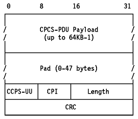
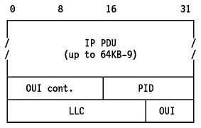
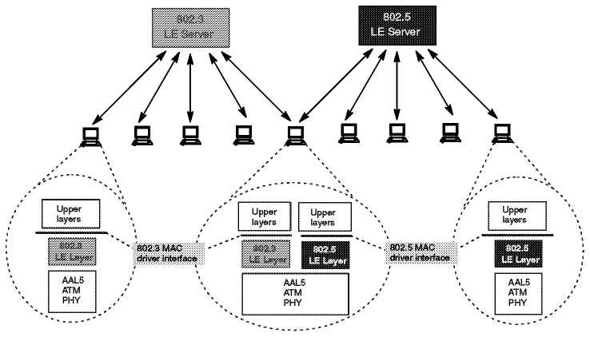

Table of Contents
Table of Contents  TCP
Application Programming Interface
TCP
Application Programming InterfaceTable of Contents TCP
Application Programming Interface
ATM-based networks are of increasing interest for both local and wide area applications. There are already some products available to build your physical ATM network. The ATM architecture is new and therefore different from the standard LAN architectures. For this reason, changes are required so that traditional LAN products will work in the ATM environment. In the case of TCP/IP the main change required is in the network interface to provide support for ATM.
There are several approaches already available, two of which are important to the transport of TCP/IP traffic. They are described in Classical IP over ATM and ATM LAN Emulation. They are also compared in Classical IP over ATM versus LAN Emulation.
The address resolution in an ATM logical IP subnet is done by the ATM Address Resolution Protocol (ATMARP) based on RFC 826 and the Inverse ATM Address Resolution Protocol (InATMARP) based on RFC 1293. ATMARP is the same protocol as the ARP protocol with extensions needed to support ARP in a unicast server ATM environment. InATMARP is the same protocol as the original InARP protocol but applied to ATM networks. Use of these protocols differs depending on whether PVCs or SVCs are used.
Both ATMARP and InATMARP are defined in RFC 1577, which is a proposed standard with a state of elective.
The encapsulation of ATMARP and InATMARP requests/replies is described in Classical IP over ATM.
The ARP protocol is used to resolve a host's hardware address for a known IP address. The InATMARP protocol is used to resolve a host's IP address for a known hardware address. In a switched environment you first establish a VC (Virtual Connection) of either PVC (Permanent Virtual Connection) or SVC (Switched Virtual Connection) in order to communicate with another station. Therefore you know the exact hardware address of the partner by administration but the IP address is unknown. InATMARP provides dynamic address resolution. InARP uses the same frame format as the standard ARP but defines two new operation codes:
Basic InATMARP operates essentially the same as ARP with the exception that InATMARP does not broadcast requests. This is because the hardware address of the destination station is already known. A requesting station simply formats a request by inserting its source hardware and IP address and the known target hardware address. It then zero fills the target protocol address field and sends it directly to the target station. For every InATMARP request, the receiving station formats a reply using the source address from the request as the target address of the reply. Both sides update their ARP tables. The hardware type value for ATM is 19 decimal and the EtherType field is set to 0x806, which indicates ARP according to RFC 1700.
In a PVC environment each station uses the InATMARP protocol to determine the IP addresses of all other connected stations. The resolution is done for those PVCs which are configured for LLC/SNAP encapsulation. It is the responsibility of each IP station supporting PVCs to revalidate ARP table entries as part of the aging process.
SVCs require support for ATMARP in the non-broadcast environment of ATM. To meet this need, a single ATMARP server must be located within the Logical IP Subnetwork (LIS) (see The Logical IP Subnetwork (LIS)). This server has authoritative responsibility for resolving the ATMARP requests of all IP members within the LIS. For an explanation of ATM terms please refer to Classical IP over ATM.
The server itself does not actively establish connections. It depends on the clients in the LIS to initiate the ATMARP registration procedure. An individual client connects to the ATMARP server using a point-to-point VC. The server, upon the completion of an ATM call/connection of a new VC specifying LLC/SNAP encapsulation, will transmit an InATMARP request to determine the IP address of the client. The InATMARP reply from the client contains the information necessary for the ATMARP server to build its ATMARP table cache. This table consists of:
Note: The ATMARP server mechanism requires that each client be administratively configured with the ATM address of the ATMARP server.
ATMARP table entries are valid:
Prior to aging an ATMARP table entry, the ATMARP server generates an InARP_REQUEST on any open VC associated with that entry and decides what to do according to the following rules:
The client handles the table updates according to the following:
As mentioned above, every ATM IP client which uses SVCs must know its ATMARP server's ATM address for the particular LIS. This address must be named at every client during customization. There is at present no "well-known" ATMARP server address defined.
The definitions for implementations of classical IP over ATM (Asynchronous Transfer Mode) are described in RFC 1577 which is a proposed standard with a status of elective according to RFC 1720 (STD 1). This RFC considers only the application of ATM as a direct replacement for the "wires", local LAN segments connecting IP end-stations ("members") and routers operating in the "classical" LAN-based paradigm. Issues raised by MAC level bridging and LAN emulation are not covered.
For ATM Forum's method of providing ATM migration please see ATM LAN Emulation.
Initial deployment of ATM provides a LAN segment replacement for:
First some ATM basics:
Cells on a particular virtual channel always follow the same path through the network and are delivered to the destination in the same order in which they were received.
The term LIS was introduced to map the logical IP structure to the ATM network. In the LIS scenario, each separate administrative entity configures its hosts and routers within a closed logical IP subnetwork (same IP network/subnet number and address mask). Each LIS operates and communicates independently of other LISs on the same ATM network. Hosts that are connected to an ATM network communicate directly to other hosts within the same LIS. This implies that all members of a LIS are able to communicate via ATM with all other members in the same LIS (VC topology is fully meshed). Communication to hosts outside of the local LIS is provided via an IP router. This router is an ATM endpoint attached to the ATM network that is configured as a member of one or more LISs. This configuration may result in a number of separate LISs operating over the same ATM network. Hosts of differing IP subnets must communicate via an intermediate IP router even though it may be possible to open a direct VC between the two IP members over the ATM network.
If you want to use more than one type of network protocol (IP, IPX, etc.) concurrently over a physical network, you need a method of multiplexing the different protocols. This can be done in the case of ATM either by VC-based multiplexing or LLC encapsulation. If you choose VC-based multiplexing you have to have a VC for each different protocol between the two hosts. The LLC encapsulation provides the multiplexing function at the LLC layer and therefore needs only one VC. TCP/IP uses, according to RFC 1577 and 1483, the second method because this kind of multiplexing was already defined in RFC 1042 for all other LAN types such as Ethernet, token-ring and FDDI. With this definition IP uses ATM simply as a LAN replacement. All the other benefits ATM has to offer, such as transportation of isochronous traffic etc., are not used. There is an IETF working group with the mission of improving the IP implementation and to interface with the ATM Forum in order to represent the interests of the Internet community for future standards.
To be exact, the TCP/IP PDU is encapsulated in an IEEE 802.2 LLC header
followed by an IEEE 802.1a SNAP header (SubNetwork Attachment Point) and
carried within the payload field of an AAL5 CPCS-PDU (Common Part Convergence
Sublayer). The AAL5 CPCS-PDU format is shown in
Figure - AAL5 CPCS-PDU Format.

Figure: AAL5 CPCS-PDU Format
The payload format for routed IP PDUs is shown in
Figure - CPCS-PDU Payload Format for IP
PDUs.

Figure: CPCS-PDU Payload Format for IP PDUs
The default MTU size for IP members in an ATM network is discussed in RFC 1626 and defined to be 9180 bytes. The LLC/SNAP header is 8 bytes; therefore, the default ATM AAL5 PDU size is 9188 bytes. The possible values can be between zero and 65535. You are allowed to change the MTU size but then all members of a LIS must be changed as well in order to have the same value. RFC 1755 recommends that all implementations should support MTU sizes up to and including 64KB.
The address resolution in an ATM network is defined as an extension of the ARP protocol and is described in Address Resolution (ATMARP and InATMARP).
There is no mapping from IP broadcast or multicast addresses to ATM "broadcast" or multicast addresses available. But there are no restrictions for transmitting or receiving IP datagrams specifying any of the four standard IP broadcast address forms as described in RFC 1122. Members, upon receiving an IP broadcast or IP subnet broadcast for their LIS, must process the packet as if addressed to that station.
The following implementations of classical IP over ATM according to RFC 1577 are available at the time of writing:
Another approach to provide a migration path to a native ATM network is ATM LAN emulation. ATM LAN emulation is still under construction by ATM Forum working groups. For the IETF approach please see Classical IP over ATM. There is no ATM Forum implementation agreement available covering virtual LANs over ATM but there are some basic agreements on the different proposals made to the ATM Forum. The descriptions below are based on the IBM proposals.
The concept of ATM LAN emulation is to construct a system such that the workstation application software ``thinks'' it is a member of a real shared-medium LAN, such as a token-ring for example. This method maximizes the reuse of existing LAN software and significantly reduces the cost of migration to ATM. In PC LAN environments for example the LAN emulation layer could be implemented under the NDIS/ODI-type interface. With such an implementation all the higher layer protocols, such as IP, IPX, NetBIOS and SNA for example, could be run over ATM networks without any change.
Refer to Figure - Ethernet and Token-ring
LAN Emulation for the implementation of token-ring and Ethernet.

Figure: Ethernet and Token-ring LAN Emulation
Each workstation that performs the LE function needs to have software to provide the LE service. This software is called the LAN emulation layer (LE layer). It provides the interface to existing protocol support (such as IP, IPX, IEEE 802.2 LLC, NetBIOS, etc.) and emulates the functions of a real shared-medium LAN. This means that no changes are needed to existing LAN application software to use ATM services. The LE layer interfaces to the ATM network through a hardware ATM adapter.
The primary function of the LE layer is to transfer encapsulated LAN frames (arriving from higher layers) to their destination either directly (over a ``direct VC'') or through the LE server. This is done by using AAL5 services provided by ATM.
Each LE layer has one or more LAN addresses as well as an ATM address.
A separate instance (logical copy or LE client) of the LE layer is needed in each workstation for each different LAN or type of LAN to be supported. For example, if both token-ring and Ethernet LAN types are to be emulated, then you need two LE layers. In fact they will probably just be different threads within the same copy of the same code but they are logically separate LE layers. Separate LE layers would also be used if one workstation needed to be part of two different emulated token-ring LANs. Each separate LE layer needs a different MAC address but can share the same physical ATM connection (adapter).
The basic function of the LE server is to provide directory, multicast and address resolution services to the LE layers in the workstations. It also provides a connectionless data transfer service to the LE layers in the workstations if needed.
Each emulated LAN must have an LE server. It would be possible to have multiple LE servers sharing the same hardware and code (via multithreading) but the LE servers are logically separate entities. As for the LE layers, an emulated token-ring LAN cannot have members that are emulating an Ethernet LAN. Thus an instance of an LE server is dedicated to a single type of LAN emulation. The LE server may be physically internal to the ATM network or provided in an external device, but logically it is always an external function which simply uses the services provided by ATM to do its job.
A default VC is a connection between an LE layer in a workstation and the LE server. These connections may be permanent or switched.
All LE control messages are carried between the LE layer and the LE server on the default VC. Encapsulated data frames may also be sent on the default VC.
The presence of the LE server and the default VCs is necessary for the LE function to be performed.
Direct VCs are connections between LE layers in the end systems. They are always switched and set up on demand. If the ATM network does not support switched connections then you cannot have direct VCs and all the data must be sent through the LE server on default VCs. If there is no direct VC available for any reason then data transfer must take place through the LE server (there is no other way).
Direct VCs are set up on request by an LE layer (the server cannot set them up as there is no third party call setup function in ATM). The ATM address of a destination LE layer is provided to a requesting LE layer by the LE server. Direct VCs stay in place until one of the partner LE layers decides to end the connection (because there is no more data).
During initialization the LE layer (workstation) establishes the default VC with the LE server. It also discovers its own ATM address - this is needed if it is to later set up direct VCs.
In this phase the LE layer (workstation) registers its MAC addresses with the LE server. Other things like filtering requirements (optional) may be provided.
This is the method used by ATM end stations to set up direct VCs with other end stations (LE layers). This function includes mechanisms for learning the ATM address of a target station, mapping the MAC address to an ATM address, storing the mapping in a table and managing the table.
For the server this function provides the means for supporting the use of direct VCs by end stations. This includes a mechanism for mapping the MAC address of an end system to its ATM address, storing the information and providing it to a requesting end station.
This structure maintains full LAN function and can support most higher layer LAN protocols. Reliance on the server for data transfer is minimized by using switched VCs for the transport of most bulk data.
LAN emulation is provided by the following IBM products:
LAN Emulation software for OS/2, Ethernet and ATM Forum LAN Emulation Specification support is expected to follow during 1995.
These two approaches to providing an easier way to migrate to ATM were made with different goals in mind.
Classical IP over ATM defines an encapsulation and address resolution method. The definitions are made for IP only and not for use with other protocols. So if you have applications requiring other protocol stacks (such as IPX or SNA for example) then IP over ATM will not provide a complete solution. On the other hand if you only have TCP or UDP-based applications then this might be the better solution, since this specialized adaptation of the IP protocol to the ATM architecture is likely to produce less overhead than a more global solution and therefore be more efficient. Another advantage of this implementation is the use of some ATM-specific functions, such as large MTU sizes, etc.
The major goal of the ATM Forum's approach is to run layer 3 and higher protocols unchanged over the ATM network. This means that existing protocols, such as TCP/IP, IPX, NetBIOS and SNA for example, and their applications can use the benefits of the fast ATM network without any changes. The mapping for all protocols is already defined. The LAN emulation layer provides all the services of a classic LAN; thus, the upper layer does not know of the existence of ATM. This is both an advantage and a disadvantage because the knowledge of the underlying network could be used to provide a more effective implementation.
In the near future both approaches will be used depending on the particular requirements. Over time, when the mapping of applications to ATM is fully defined and implemented, the scheme of a dedicated ATM implementation may be used.
 TCP/IP
and OSI
TCP/IP
and OSI